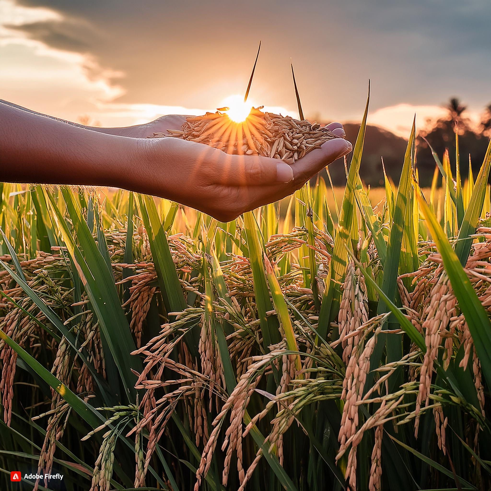

Rice Farm
Rice farming sustains global food security, providing a vital source of nutrients for millions. It supports rural economies, preserves cultural traditions, and requires sustainable practices to adapt to climate change and environmental challenges.
-

The Importance of Rice Farming: Why It's a Vital Part of Global Food Security
-
Rice Farming Techniques: A Guide to Sustainable and Productive Practices

-
The Impact of Climate Change on Rice Farming: Adapting to a Changing Environment
What we do?
We are addressing five impact challenges faced by farmers, consumers, and stakeholders, in the world’s rice-producing countries.
Climate Change & Sustainability
Rice farms face mounting challenges from climate change, including increased flooding, droughts, and pest outbreaks. Sustainable practices like crop rotation, organic farming, and water conservation are crucial for resilience
Nutrition and Food Security
"Rice farms play a vital role in ensuring global nutrition and food security, providing essential carbohydrates, vitamins, and minerals, and supporting local communities' health and well-being."
Environtment
Rice farm environments feature lush green fields, gentle slopes, and tranquil waterways, with a mix of native and introduced plant species, and a diverse array of wildlife
Prosperity
Rice farm prosperity thrives with sustainable practices, efficient irrigation, and community engagement, yielding bountiful harvests and economic growth for rural communities.